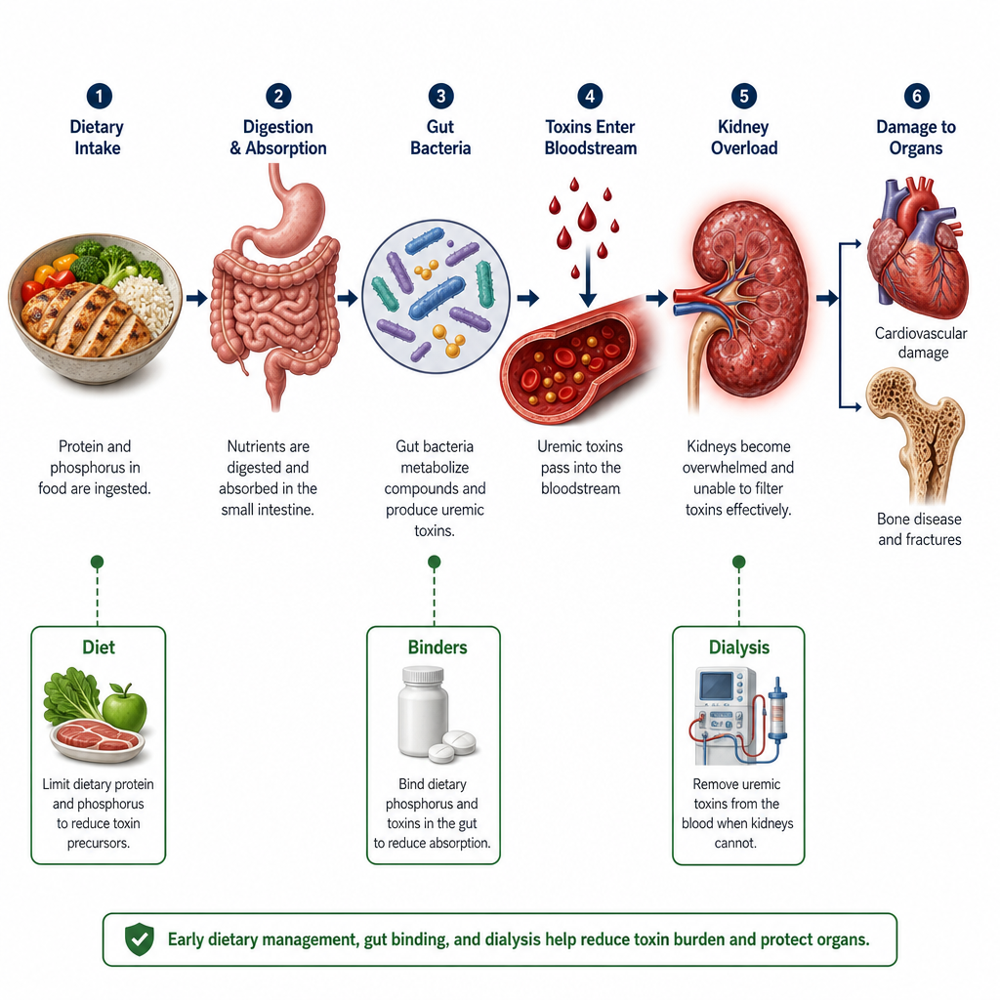
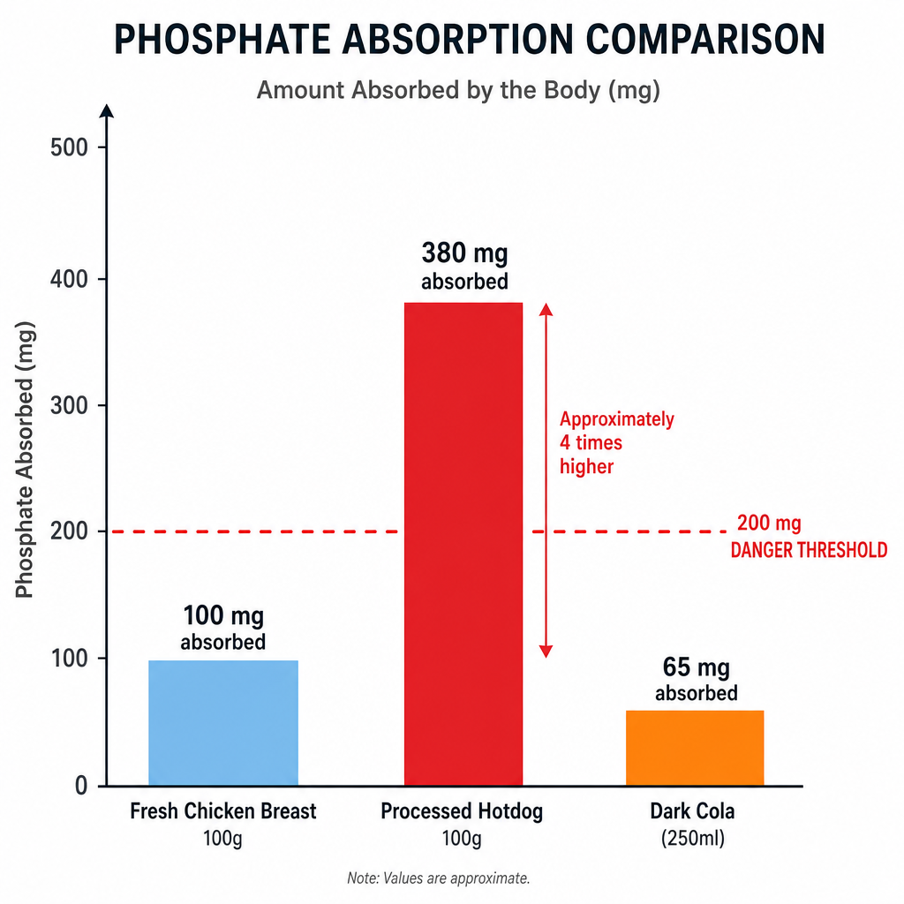
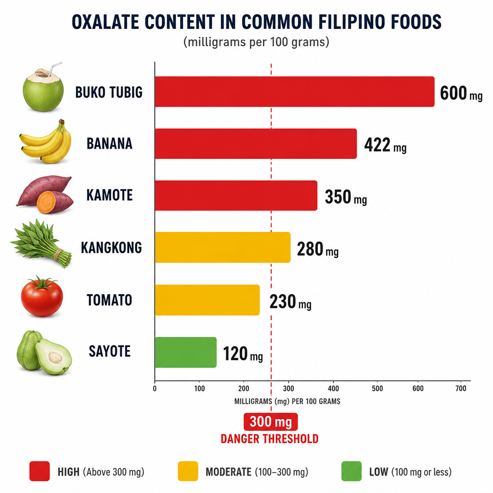
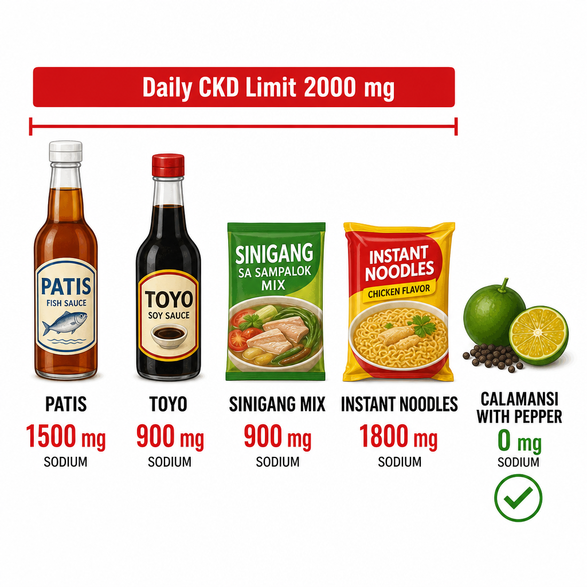
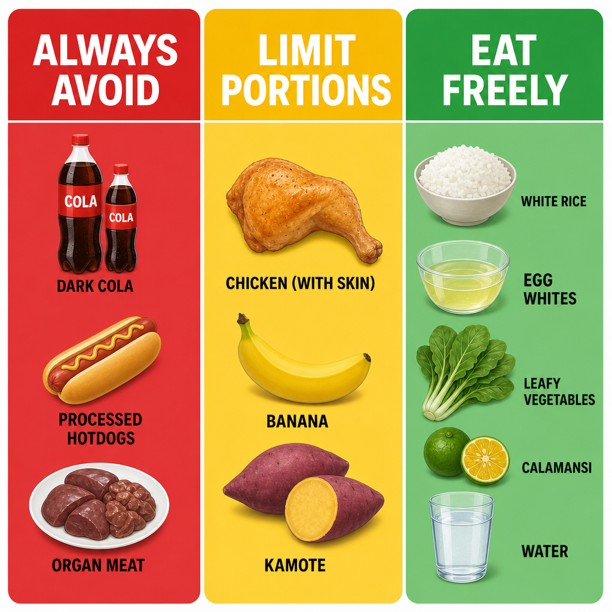

What Are Kidney Toxins — and Why Do They Accumulate?Ano ang mga Lason ng Bato — at Bakit Nag-iipon?Unsa ang mga Hilo sa Kidney — ug Ngano nga Nag-ipon? Ano ing deng Lason ning Batu — at Bakit Nag-iipon?
A kidney toxin is any substance that builds up in the blood when the kidneys cannot adequately filter and excrete it. Some toxins come directly from food. Others are metabolic byproducts of digestion that healthy kidneys clear effortlessly — but that reach harmful levels in CKD. Diet is one of the most powerful tools for controlling toxin load — reducing what the kidneys must excrete slows progression and reduces symptoms.Ang lason ng bato ay anumang sangkap na nag-iipon sa dugo kapag hindi kayang linisin at itapon ng bato ang sapat. Ang ilang mga lason ay nagmumula nang direkta sa pagkain. Ang iba ay mga byproduct ng metabolismo ng pagtunaw na madaling nilinis ng malusog na bato — ngunit umaabot sa mapanganib na antas sa CKD. Ang diyeta ay isa sa pinaka-makapangyarihang kasangkapan sa pagkontrol ng bigat ng lason — ang pagbabawas ng kailangang itapon ng bato ay nagpapabagal ng pag-unlad at nagbabawas ng mga sintomas.Ang hilo sa kidney mao ang bisan unsang sangkap nga nag-ipon sa dugo kon ang mga kidney dili makafilter ug makalabas niini sa husto. Ang ubang mga hilo gikan direkta sa pagkaon. Ang uban mga byproduct sa metabolismo sa pagtunaw nga daling gilimpyohan sa himsog nga kidney — apan nakaabot sa makadaot nga lebel sa CKD. Ang diyeta usa sa pinaka-gamhanan nga himan sa pagkontrol sa bigat sa hilo — ang pagkunhod sa kinahanglan nga ilabas sa kidney nagpabagal sa pag-uswag ug nagkunhod sa mga sintomas. Ing lason ning batu ya anumang sangkap a nag-iipon king daya nung ali kayang linisin at itapon ning batu ing sapat. Ing ilang deng lason ya nagmumula nang direkta king pamangan. Ing iba ya deng byproduct ning metabolismo ning pagtunaw a madaling nilinis ning malusog a batu — ngarud umaabot king mapanganib a antas king CKD. Ing diyeta ya metung king pinaka-makapangyarihang kasangkapan king pagkontrol ning bigat ning lason — ing pagbabawas ning kailangang itapon ning batu ya nagpapabagal ning pag-unlad at nagbabawas ning deng sintomas.
Five major food-derived toxin categories — each requiring specific dietary strategies to reduce accumulation in CKD. The kidney normally excretes all of these efficiently; in CKD, each becomes a target for dietary intervention.Limang pangunahing kategorya ng mga lason mula sa pagkain — bawat isa ay nangangailangan ng partikular na estratehiya sa diyeta upang bawasan ang pag-iipon sa CKD. Ang bato ay karaniwang nagtatapon ng lahat ng ito nang mahusay; sa CKD, ang bawat isa ay nagiging target ng interbensyon sa diyeta.Lima ka panguna nga kategorya sa mga hilo gikan sa pagkaon — ang matag usa nagkinahanglan og espesipikong mga estratehiya sa diyeta aron makunhuran ang pag-ipon sa CKD. Ang kidney kasagaran maglabas sa tanan niini nga episyente; sa CKD, ang matag usa nahimong target sa interbensyon sa diyeta. Limang pangunahing kategorya ning deng lason mula king pamangan — bawat metung ya nangangailangan ning partikular a estratehiya king diyeta upang bawasan ing pag-iipon king CKD. Ing batu ya karaniwang nagtatapon ning amin ning ini nang mahusay; king CKD, ing bawat metung ya nagiging target ning interbensyon king diyeta.
Toxins from food directlyMga lason direkta mula sa pagkainMga hilo direkta gikan sa pagkaon Deng lason direkta mula king pamangan
Phosphorus additives, sodium, potassium, and oxalate enter the bloodstream directly from digestion. Their concentration in the blood depends heavily on what is eaten — making diet the primary tool for controlling their levels.Ang mga additibo ng phosphorus, sodium, potassium, at oxalate ay direktang pumapasok sa daloy ng dugo mula sa pagtunaw. Ang kanilang konsentrasyon sa dugo ay lubos na nakasalalay sa kinakain — kaya ang diyeta ang pangunahing kasangkapan sa pagkontrol ng kanilang mga antas.Ang mga additibo sa phosphorus, sodium, potassium, ug oxalate direkta mosulod sa dugo gikan sa pagtunaw. Ang ilang konsentrasyon sa dugo dako ang pag-apekto sa kinakan — mao nga ang diyeta ang punong himan sa pagkontrol sa ilang mga lebel. Ing deng additibo ning phosphorus, sodium, potassium, at oxalate ya direktang pumapasok king daloy ning daya mula king pagtunaw. Ing kanilang konsentrasyon king daya ya lubos a nakasalalay king kinakain — kaya ing diyeta ing pangunahing kasangkapan king pagkontrol ning kanilang deng antas.
Toxins from food metabolismMga lason mula sa metabolismo ng pagkainMga hilo gikan sa metabolismo sa pagkaon Deng lason mula king metabolismo ning pamangan
Purines are metabolized into uric acid. Protein generates urea and ammonia. Tryptophan and tyrosine are converted by gut bacteria into indoxyl sulfate and p-cresyl sulfate — uremic toxins that directly accelerate CKD progression.Ang mga purine ay na-metabolize sa uric acid. Ang protina ay gumagawa ng urea at ammonia. Ang tryptophan at tyrosine ay ginagawang indoxyl sulfate at p-cresyl sulfate ng mga bakterya sa bituka — mga uremic toxin na direktang nagpapabilis ng pag-unlad ng CKD.Ang mga purine gi-metabolize sa uric acid. Ang protina naghimo og urea ug ammonia. Ang tryptophan ug tyrosine gibag-o sa mga bakterya sa tinai ngadto sa indoxyl sulfate ug p-cresyl sulfate — mga uremic toxin nga direktang nagpadali sa pag-uswag sa CKD. Ing deng purine ya a-metabolize king uric acid. Ing protina ya gumagawa ning urea at ammonia. Ing tryptophan at tyrosine ya ginagawang indoxyl sulfate at p-cresyl sulfate ning deng bakterya king bituka — deng uremic toxin a direktang nagpapabilis ning pag-unlad ning CKD.
From Plate to Bloodstream — How Food Toxins FormMula sa Plato Hanggang sa Dugo — Paano Nabubuo ang mga Lason ng PagkainGikan sa Plato Ngadto sa Dugo — Unsaon Paghimo sa mga Hilo sa Pagkaon Mula king Plato Anggang king Daya — Paano Nabubuo ing deng Lason ning Pamangan

Dietary intervention works at the earliest point — reducing the amount of toxin precursors entering the body. Gut microbiome modification (probiotics, prebiotics) intercepts the bacterial conversion step. Phosphate binders act in the gut. Dialysis is the last resort.Ang interbensyon sa diyeta ay gumagana sa pinakamaagang punto — binabawasan ang dami ng mga precursor ng lason na pumapasok sa katawan. Ang pagbabago ng mikrobiome ng bituka (probiotics, prebiotics) ay humahadlang sa hakbang ng pagpalit ng bakterya. Ang mga phosphate binder ay kumikilos sa bituka. Ang dialysis ay ang huling paraan.Ang interbensyon sa diyeta nagtrabaho sa pinakaunang punto — nagkunhod sa dami sa mga precursor sa hilo nga mosulod sa lawas. Ang pagbag-o sa mikrobiome sa tinai (probiotics, prebiotics) nagpugong sa hakbang sa pagbag-o sa bakterya. Ang mga phosphate binder nagtrabaho sa tinai. Ang dialysis mao ang katapusang solusyon. Ing interbensyon king diyeta ya gumagana king pinakamaagang punto — binabawasan ing dami ning deng precursor ning lason a pumapasok king bangkî. Ing pagbabago ning mikrobiome ning bituka (probiotics, prebiotics) ya humahadlang king hakbang ning pagpalit ning bakterya. Ing deng phosphate binder ya kumikilos king bituka. Ing dialysis ya ing huling paraan.
Phosphorus: Why Processed Foods Are So DangerousPhosphorus: Bakit Napaka-Mapanganib ng mga Processed na PagkainPhosphorus: Ngano nga Delikado Kaayo ang mga Processed nga Pagkaon Phosphorus: Bakit Napaka-Mapanganib ning deng Processed a Pamangan
Not all phosphorus is equal — absorption rate determines dangerHindi pantay ang lahat ng phosphorus — ang rate ng pagsipsip ang nagtatakda ng panganibDili tanan nga phosphorus pareho — ang rate sa pagsuyop ang nagtino sa delikado Ali pantay ing amin ning phosphorus — ing rate ning pagsipsip ing nagtatakda ning panganib
Phosphorus occurs in two forms. Organic phosphorus (naturally in meat, fish, beans, dairy) is bound to proteins and absorbed at 40–60% — the gut must digest the protein first. Inorganic phosphorus (added as preservatives and flavor enhancers in processed foods) is free, unbound, and absorbed at 90–100% immediately. This means a hotdog with phosphate additives delivers twice the phosphorus load of an equivalent amount of fresh chicken — at double the absorption rate.Ang phosphorus ay nangyayari sa dalawang anyo. Ang organic phosphorus (natural sa karne, isda, beans, dairy) ay nakatali sa mga protina at nasipsip sa 40–60% — ang bituka ay kailangang tunawin muna ang protina. Ang inorganic phosphorus (idinagdag bilang mga preservative at pampabango sa mga processed na pagkain) ay malaya, hindi nakatali, at nasipsip sa 90–100% agad. Nangangahulugan ito na ang isang hotdog na may mga phosphate additives ay nagbibigay ng doble ng phosphorus kumpara sa katumbas na dami ng sariwang manok — sa doble na rate ng pagsipsip.Ang phosphorus naay duha ka porma. Ang organic phosphorus (natural sa karne, isda, beans, dairy) nakatali sa mga protina ug nasuyop sa 40–60% — ang tinai kinahanglan magtunaw sa protina una. Ang inorganic phosphorus (gidugang ingon mga preservative ug pampalasom sa mga processed nga pagkaon) libre, dili nakatali, ug nasuyop sa 90–100% dayon. Nagpasabot kini nga ang usa ka hotdog nga adunay phosphate additives naghatag og doble nga phosphorus kumpara sa katumbas nga kantidad sa sariwang manok — sa doble nga rate sa pagsuyop. Ing phosphorus ya nangyayari king dalawang anyo. Ing organic phosphorus (natural king karne, isda, beans, dairy) ya nakatali king deng protina at nasipsip king 40–60% — ing bituka ya kailangang tunawin muna ing protina. Ing inorganic phosphorus (idinagdag bilang deng preservative at pampabango king deng processed a pamangan) ya malaya, ali nakatali, at nasipsip king 90–100% agad. Nangangahulugan ini a ing metung a hotdog a atin deng phosphate additives ya nagbibigay ning doble ning phosphorus kumpara king katumbas a dami ning sariwang manok — king doble a rate ning pagsipsip.

Processed meats deliver up to 4× the absorbed phosphorus load of equivalent fresh meat — purely from inorganic phosphate additives. A single hotdog can approach a CKD patient's entire daily phosphorus allowance.Ang mga processed na karne ay nagbibigay ng hanggang 4× ng nasipsip na phosphorus kumpara sa katumbas na sariwang karne — dahil lamang sa mga inorganic phosphate additives. Ang isang hotdog ay maaaring malapit sa buong araw-araw na allowance ng phosphorus ng pasyenteng CKD.Ang mga processed nga karne naghatag og hangtod 4× sa nasuyop nga phosphorus kumpara sa katumbas nga sariwang karne — tungod lang sa mga inorganic phosphate additives. Ang usa ka hotdog mahimong malapit sa tibuok adlaw-adlaw nga allowance sa phosphorus sa pasyente sa CKD. Ing deng processed a karne ya nagbibigay ning anggang 4× ning nasipsip a phosphorus kumpara king katumbas a sariwang karne — dahil lamang king deng inorganic phosphate additives. Ing metung a hotdog ya maaaring malapit king buong aldo-aldo a allowance ning phosphorus ning pasyenteng CKD.
| FoodPagkainPagkaon Pamangan | Phosphorus (per 100g)Phosphorus (bawat 100g)Phosphorus (matag 100g) Phosphorus (bawat 100g) | AbsorptionPagsipsipPagsuyop Pagsipsip | CKD verdictHatol para sa CKDDesisyon sa CKD Hatol para king CKD |
|---|---|---|---|
| Dark colas (Coke, Pepsi) | ~20 mg/100mL (phosphoric acid) | ~100% | AVOID entirelyIWASAN nang ganapLIKAYAN nang hingpit IWASAN nang ganap |
| Processed cheese (Cheez Whiz, Eden) | ~900 mg | ~90% | AVOID entirelyIWASAN nang ganapLIKAYAN nang hingpit IWASAN nang ganap |
| Hotdog / longganisa | ~350–500 mg | ~90% | AVOID entirelyIWASAN nang ganapLIKAYAN nang hingpit IWASAN nang ganap |
| Instant noodles | ~200–300 mg + additives | ~85–95% | AVOID entirelyIWASAN nang ganapLIKAYAN nang hingpit IWASAN nang ganap |
| Whole milk / full-fat dairyBuong gatas / full-fat dairyTibuok nga gatas / full-fat dairy Buong gatas / full-fat dairy | ~90–120 mg | ~60% | LIMIT — 1 small serving/day maxLIMITAHAN — 1 maliit na serving/arawLIMITAHI — 1 gamay nga serving/adlaw LIMITAHAN — 1 maliit a serving/aldo |
| Chicken breast (fresh, unprocessed)Dibdib ng manok (sariwa, hindi processed)Dughan sa manok (sariwa, dili processed) Dibdib ning manok (sariwa, ali processed) | ~180 mg | ~40–50% | LIMIT — 1 serving/day; take binderLIMITAHAN — 1 serving/araw; inumin ang binderLIMITAHI — 1 serving/adlaw; inumon ang binder LIMITAHAN — 1 serving/aldo; inumin ing binder |
| Bangus / tilapia (fresh) | ~160 mg | ~45% | LIMIT — 1 serving/day; take binderLIMITAHAN — 1 serving/araw; inumin ang binderLIMITAHI — 1 serving/adlaw; inumon ang binder LIMITAHAN — 1 serving/aldo; inumin ing binder |
| White rice (cooked)Puting kanin (niluto)Puting bugas (luto) Puting kanin (niluto) | ~30 mg | ~35% | SAFE — preferred stapleLIGTAS — gustong pangunahing pagkainLUWAS — ginagustong pangunahing pagkaon LIGTAS — gustong pangunahing pamangan |
| Egg whites onlyPuti ng itlog lamangPuti sa itlog lang Puti ning itlog lamang | ~15 mg | ~40% | SAFE — best protein for CKDLIGTAS — pinakamahusay na protina para sa CKDLUWAS — labing maayo nga protina para sa CKD LIGTAS — pinakamahusay a protina para king CKD |
| Sayote / upo / repolyo | ~15–25 mg | ~30% | SAFE — preferred vegetablesLIGTAS — gustong mga gulayLUWAS — ginagustong mga utanon LIGTAS — gustong deng gulay |
Potassium: When Healthy Foods Become DangerousPotassium: Kapag ang mga Masustansyang Pagkain ay Nagiging MapanganibPotassium: Kon ang mga Himsog nga Pagkaon Mahimong Delikado Potassium: Nung ing deng Masustansyang Pamangan ya Nagiging Mapanganib
The "healthy" foods that can stop your heart in CKDAng mga "masustansyang" pagkain na maaaring itigil ang inyong puso sa CKDAng mga "himsog" nga pagkaon nga mahimong mohunong sa inyong puso sa CKD Ing deng "masustansyang" pamangan a maaaring itigil ing inyu pusu king CKD
Potassium regulates the electrical activity of the heart. In CKD Stage 3b+, the kidney cannot excrete excess potassium — serum levels rise silently with no symptoms until the heart develops life-threatening arrhythmias (peaked T-waves, ventricular fibrillation, cardiac arrest). Foods considered extremely healthy — banana, kamote, avocado, coconut water, tomato — are among the highest-potassium foods available and require strict portion control or avoidance in advanced CKD.Ang potassium ay nagkokontrol ng electrical activity ng puso. Sa CKD Stage 3b+, ang bato ay hindi kayang itapon ang sobrang potassium — ang mga antas sa serum ay tahimik na tumataas nang walang sintomas hanggang ang puso ay magkaroon ng mga banta sa buhay na arrhythmia (peaked T-waves, ventricular fibrillation, cardiac arrest). Ang mga pagkaing itinuturing na napaka-masustansya — saging, kamote, avocado, tubig ng buko, kamatis — ay kabilang sa pinakamataas na potassium na pagkain at nangangailangan ng mahigpit na kontrol ng bahagi o pag-iwas sa advanced na CKD.Ang potassium nagkontrol sa electrical activity sa puso. Sa CKD Stage 3b+, ang kidney dili makalabas sa sobrang potassium — ang mga lebel sa serum hilom nga motaas nga walay sintomas hangtod ang puso magkaon og mga arrhythmia nga nagbanta sa kinabuhi (peaked T-waves, ventricular fibrillation, cardiac arrest). Ang mga pagkaon nga giisip nga labi ka himsog — saging, kamote, avocado, tubig sa buko, kamatis — kabilang sa pinaka-taas nga potassium nga pagkaon ug nanginahanglan og mahigpit nga kontrol sa bahin o paglihay sa advanced nga CKD. Ing potassium ya nagkokontrol ning electrical activity ning pusu. King CKD Stage 3b+, ing batu ya ali kayang itapon ing sobrang potassium — ing deng antas king serum ya tahimik a tumataas nang alang sintomas anggang ing pusu ya magkaroon ning deng banta king biye a arrhythmia (peaked T-waves, ventricular fibrillation, cardiac arrest). Ing deng pagkaing itinuturing a napaka-masustansya — saging, kamote, avocado, danum ning buko, kamatis — ya kabilang king pinakamatas a potassium a pamangan at nangangailangan ning mahigpit a kontrol ning bahagi o pag-iwas king advanced a CKD.

The typical Filipino "healthy" diet — banana, buko juice, kamote — is actually high-potassium. In CKD Stage 3b+, these must be portion-controlled or substituted. Sayote remains one of the safest vegetables available.Ang tipikal na "masustansyang" diyeta ng Pilipino — saging, juice ng buko, kamote — ay talagang mataas sa potassium. Sa CKD Stage 3b+, ang mga ito ay dapat kontrolin ang bahagi o palitan. Ang sayote ay nananatiling isa sa pinaka-ligtas na gulay na available.Ang tipikal nga "himsog" nga diyeta sa Pilipino — saging, juice sa buko, kamote — kataas-taas sa potassium. Sa CKD Stage 3b+, kini kinahanglan kontrolon ang bahin o ilisan. Ang sayote nagpabilin nga usa sa pinaka-luwas nga utanon nga available. Ing tipikal a "masustansyang" diyeta ning Pilipino — saging, juice ning buko, kamote — ya talagang matas king potassium. King CKD Stage 3b+, ing deng ini ya dapat kontrolin ing bahagi o palitan. Ing sayote ya nananatiling metung king pinaka-ligtas a gulay a available.
Sodium: Hidden in Every Filipino CondimentSodium: Nakatago sa Bawat Kondimento ng PilipinoSodium: Nagtago sa Matag Kondimento sa Pilipino Sodium: Nakatago king Bawat Kondimento ning Pilipino
Why sodium restriction amplifies all other CKD treatmentsBakit ang pagbabawas ng sodium ay nagpapalaki ng lahat ng ibang paggamot sa CKDNgano nga ang pagkunhod sa sodium nagpadako sa tanan pang pagtambal sa CKD Bakit ing pagbabawas ning sodium ya nagpapalaki ning amin ning ibang paggamut king CKD
Sodium raises blood pressure, amplifies intraglomerular pressure, worsens proteinuria, and causes fluid retention. Critically: high sodium intake reduces the antiproteinuric effect of ACE inhibitors by up to 50% — making your blood pressure medication half as effective. Target is <2,000 mg sodium per day (about 1 teaspoon of salt total from all sources). A single tablespoon of patis contains ~1,500 mg sodium — nearly the entire daily allowance.Ang sodium ay nagpapataas ng presyon ng dugo, nagpapalaki ng presyon sa loob ng glomerulo, nagpapalala ng proteinuria, at nagdudulot ng pagtitipon ng likido. Kritikal: ang mataas na sodium ay nagbabawas ng antiproteinuric na epekto ng mga ACE inhibitor ng hanggang 50% — ginagawang kalahati ang bisa ng gamot sa presyon ng dugo. Ang target ay <2,000 mg sodium bawat araw (halos 1 kutsarita ng asin mula sa lahat ng pinagkukunan). Ang isang kutsara ng patis ay naglalaman ng ~1,500 mg sodium — halos ang buong araw-araw na allowance.Ang sodium nagpataas sa presyon sa dugo, nagpadako sa presyon sa sulod sa glomerulo, nagpasamot sa proteinuria, ug nagdala sa pagtipon sa likido. Kritikal: ang taas nga sodium nagkunhod sa antiproteinuric nga epekto sa mga ACE inhibitor hangtod 50% — naghimo sa inyong tambal sa presyon og katunga ang epekto. Ang target mao ang <2,000 mg sodium matag adlaw (mga 1 kutsarita sa asin gikan sa tanan nga tinubdan). Ang usa ka kutsara sa patis naglangkob og ~1,500 mg sodium — halos ang tibuok adlaw-adlaw nga allowance. Ing sodium ya nagpapataas ning presyon ning daya, nagpapalaki ning presyon king loob ning glomerulo, nagpapalala ning proteinuria, at nagdudulot ning pagtitipon ning likido. Kritikal: ing matas a sodium ya nagbabawas ning antiproteinuric a epekto ning deng ACE inhibitor ning anggang 50% — ginagawang kalahati ing bisa ning gamut king presyon ning daya. Ing target ya <2,000 mg sodium bawat aldo (halos 1 kutsarita ning asin mula king amin ning pinagkukunan). Ing metung a kutsara ning patis ya naglalaman ning ~1,500 mg sodium — halos ing buong aldo-aldo a allowance.

A single tablespoon of patis — used in almost every Filipino dish — contains 75% of the entire daily sodium allowance for a CKD patient. Sinigang mix and instant noodles each approach or exceed the full daily limit in one serving.Ang isang kutsara ng patis — ginagamit sa halos bawat lutong Pilipino — ay naglalaman ng 75% ng buong araw-araw na allowance ng sodium para sa pasyenteng CKD. Ang sinigang mix at instant noodles ay bawat isa ay lumalapit o lumalagpas sa buong araw-araw na limitasyon sa isang serving.Ang usa ka kutsara sa patis — gigamit sa halos matag lutong Pilipino — naglangkob og 75% sa tibuok adlaw-adlaw nga allowance sa sodium para sa pasyente sa CKD. Ang sinigang mix ug instant noodles matag usa nagkaduol o molapas sa tibuok adlaw-adlaw nga limitasyon sa usa ka serving. Ing metung a kutsara ning patis — ginagamit king halos bawat lutong Pilipino — ya naglalaman ning 75% ning buong aldo-aldo a allowance ning sodium para king pasyenteng CKD. Ing sinigang mix at instant noodles ya bawat metung ya lumalapit o lumalagpas king buong aldo-aldo a limitasyon king metung a serving.
Purines: When Protein Becomes Uric AcidMga Purine: Kapag ang Protina ay Nagiging Uric AcidMga Purine: Kon ang Protina Mahimong Uric Acid Deng Purine: Nung ing Protina ya Nagiging Uric Acid
The meat-seafood-alcohol triangle of uric acid elevationAng tatsulok ng karne-pagkain sa dagat-alak ng pagtaas ng uric acidAng tatsulok sa karne-pagkaon sa dagat-alak sa pagtaas sa uric acid Ing tatsulok ning karne-pamangan king dagat-alak ning pagtaas ning uric acid
Purines are nitrogen-containing compounds found in high concentrations in organ meats (liver, kidney, tripe), small oily fish (sardines, dilis, bagoong), shellfish, and yeast (beer). When digested, purines are metabolized to uric acid in the liver. In CKD, uric acid excretion is reduced — levels rise, crystals deposit in kidney tubules and joints, and uric acid itself directly causes tubulointerstitial inflammation, renal vasoconstriction, and accelerated nephron loss. Target serum uric acid: <6.0 mg/dL.Ang mga purine ay mga compound na naglalaman ng nitrogen na matatagpuan sa mataas na konsentrasyon sa mga lamang-loob (atay, bato, goto), maliliit na matatabang isda (sardinas, dilis, bagoong), shellfish, at lebadura (beer). Kapag tinunaw, ang mga purine ay na-metabolize sa uric acid sa atay. Sa CKD, ang pagtatanggal ng uric acid ay nabawasan — ang mga antas ay tumataas, ang mga kristal ay nagtitipon sa mga tubule ng bato at kasukasuan, at ang uric acid mismo ay direktang nagdudulot ng tubulointerstitial inflammation, renal vasoconstriction, at pinabilis na pagkawala ng nephron. Target na uric acid sa serum: <6.0 mg/dL.Ang mga purine mga compound nga naglangkob og nitrogen nga makita sa taas nga konsentrasyon sa mga organ meats (atay, kidney, goto), gagmay nga tambok nga isda (sardinas, dilis, bagoong), shellfish, ug lebadura (beer). Kon matunaw, ang mga purine gi-metabolize sa uric acid sa atay. Sa CKD, ang paglabas sa uric acid nabawasan — ang mga lebel motaas, ang mga kristal nag-ipon sa mga tubule sa kidney ug mga kasukasuan, ug ang uric acid mismo direkta nagdala sa tubulointerstitial inflammation, renal vasoconstriction, ug pinabiling pagkawala sa nephron. Target nga uric acid sa serum: <6.0 mg/dL. Ing deng purine ya deng compound a naglalaman ning nitrogen a matatagpuan king matas a konsentrasyon king deng lamang-loob (atay, batu, goto), maliliit a matatabang isda (sardinas, dilis, bagoong), shellfish, at lebadura (beer). Nung tinunaw, ing deng purine ya a-metabolize king uric acid king atay. King CKD, ing pagtatanggal ning uric acid ya nabawasan — ing deng antas ya tumataas, ing deng kristal ya nagtitipon king deng tubule ning batu at kasukasuan, at ing uric acid mismo ya direktang nagdudulot ning tubulointerstitial inflammation, renal vasoconstriction, at pinabilis a pagkaala ning nephron. Target a uric acid king serum: <6.0 mg/dL.
Very high purine — avoidNapakataas na purine — iwasanLabi ka taas nga purine — likayi Napakataas a purine — iwasan
Liver, kidney, tripe (goto), brain, heart, dilis (anchovies), bagoong, sardines in oil, dried shrimp, mussels, clams, beer and alcoholic beverages.Atay, bato, goto, utak, puso, dilis, bagoong, sardinas sa mantika, tuyong hipon, tahong, halaan, beer at mga inuming may alkohol.Atay, kidney, goto, utok, puso, dilis, bagoong, sardinas sa mantika, uga nga hipon, tahong, halaan, beer ug mga ilimnong adunay alkohol. Atay, batu, goto, utak, pusu, dilis, bagoong, sardinas king mantika, tuyong hipon, tahong, halaan, beer at deng inuming atin alkohol.
Moderate purine — limitKatamtamang purine — limitahanModerate nga purine — limitahi Katamtamang purine — limitahan
Beef, pork, chicken (especially dark meat), bangus, tilapia, crabs, shrimp, mongo beans, asparagus, cauliflower. One serving per day maximum.Baka, baboy, manok (lalo na ang madilim na karne), bangus, tilapia, alimango, hipon, monggo, asparagus, cauliflower. Isang serving bawat araw ang maximum.Baka, baboy, manok (labi na ang itom nga karne), bangus, tilapia, alimango, hipon, monggo, asparagus, cauliflower. Usa ka serving matag adlaw ang maximum. Baka, baboy, manok (lalo a ing madilim a karne), bangus, tilapia, alimango, hipon, monggo, asparagus, cauliflower. Metung a serving bawat aldo ing maximum.
Low purine — preferredMababang purine — mas gustoUbos nga purine — ginagustoan Mababang purine — mas gusto
Egg whites, tofu, white rice, most vegetables (except asparagus/cauliflower), fruits, dairy (in moderation), coffee (protective — reduces gout risk), water.Puti ng itlog, tofu, puting kanin, karamihan sa mga gulay (maliban sa asparagus/cauliflower), prutas, dairy (sa katamtaman), kape (protektibo — nagbabawas ng panganib ng gout), tubig.Puti sa itlog, tofu, puting bugas, kadaghanan sa mga utanon (gawas sa asparagus/cauliflower), prutas, dairy (sa katamtaman), kape (protektibo — nagkunhod sa delikado sa gout), tubig. Puti ning itlog, tofu, puting kanin, kadaklan king deng gulay (maliban king asparagus/cauliflower), prutas, dairy (king katamtaman), kape (protektibo — nagbabawas ning panganib ning gout), danum.
Oxalate: The Hidden Stone-Forming CompoundOxalate: Ang Nakatagong Compound na Nagbubuo ng BatoOxalate: Ang Nagtago nga Compound nga Nagbuhat og Bato Oxalate: Ing Nakatagong Compound a Nagbubuo ning Batu
Why too much vitamin C and some "superfoods" cause kidney stonesBakit ang sobrang vitamin C at ilang "superfood" ay nagdudulot ng bato sa batoNgano nga ang sobrang vitamin C ug pipila ka "superfood" nagdala og bato sa kidney Bakit ing sobrang vitamin C at ilang "superfood" ya nagdudulot ning batu king batu
Oxalate is a metabolic byproduct of certain foods that binds calcium in the urine — forming calcium oxalate crystals and stones. In CKD, reduced oxalate excretion leads to hyperoxaluria, crystal deposition in tubules, and direct tubular cell toxicity — accelerating nephron loss even without visible stones. Enteric hyperoxaluria (from fat malabsorption) is a specific CKD risk in patients with GI disease. Vitamin C supplements above 1,000 mg/day are metabolized to oxalate — use 250 mg maximum.Ang oxalate ay isang metabolic byproduct ng ilang pagkain na nagbubuklod ng calcium sa ihi — bumubuo ng calcium oxalate crystals at bato. Sa CKD, ang nabawasang pagtatapon ng oxalate ay nagdudulot ng hyperoxaluria, pagtitipon ng kristal sa mga tubule, at direktang toxicity ng tubular cell — nagpapabilis ng pagkawala ng nephron kahit walang nakikitang bato. Ang enteric hyperoxaluria (mula sa fat malabsorption) ay isang partikular na panganib ng CKD sa mga pasyenteng may sakit sa GI. Ang mga supplement ng vitamin C na higit sa 1,000 mg/araw ay na-metabolize sa oxalate — gamitin ang 250 mg maximum.Ang oxalate usa ka metabolic byproduct sa pipila ka pagkaon nga nagbuklod sa calcium sa ihi — nagbuhat og calcium oxalate crystals ug bato. Sa CKD, ang nabawasan nga paglabas sa oxalate nagdala sa hyperoxaluria, pagtipon sa kristal sa mga tubule, ug direktang toxicity sa tubular cell — nagpadali sa pagkawala sa nephron bisan walay makita nga bato. Ang enteric hyperoxaluria (gikan sa fat malabsorption) usa ka espesipikong delikado sa CKD sa mga pasyente nga adunay sakit sa GI. Ang mga supplement sa vitamin C nga labaw sa 1,000 mg/adlaw gi-metabolize sa oxalate — gamiton ang 250 mg maximum. Ing oxalate ya metung a metabolic byproduct ning ilang pamangan a nagbubuklod ning calcium king ihi — bumubuo ning calcium oxalate crystals at batu. King CKD, ing nabawasang pagtatapon ning oxalate ya nagdudulot ning hyperoxaluria, pagtitipon ning kristal king deng tubule, at direktang toxicity ning tubular cell — nagpapabilis ning pagkaala ning nephron kahit alang nakikitang batu. Ing enteric hyperoxaluria (mula king fat malabsorption) ya metung a partikular a panganib ning CKD king deng pasyenteng atin sakit king GI. Ing deng supplement ning vitamin C a higit king 1,000 mg/aldo ya a-metabolize king oxalate — gamitin ing 250 mg maximum.
AGEs: Why Cooking Method Matters as Much as IngredientsMga AGE: Bakit Kasing-Halaga ang Paraan ng Pagluluto Gaya ng mga SangkapMga AGE: Ngano nga ang Paagi sa Pagluto Hinungdanon Pareho sa mga Sangkap Deng AGE: Bakit Kasing-Halaga ing Paraan ning Pagluluto Gaya ning deng Sangkap
The brown crust on your food is creating kidney-aging compoundsAng kulay-kayumanggi na crust sa inyong pagkain ay gumagawa ng mga compound na nagpapatiggas ng batoAng brown nga crust sa inyong pagkaon nagbuhat og mga compound nga nagpatigulang sa kidney Ing kulay-kayumanggi a crust king inyu pamangan ya gumagawa ning deng compound a nagpapatiggas ning batu
When proteins and sugars are cooked at high temperatures (grilling, deep-frying, roasting, broiling), they react chemically to form Advanced Glycation End-Products (AGEs) — the same compounds that accumulate in diabetic tissues and drive vascular aging. AGEs bind RAGE receptors in the kidney mesangium, podocytes, and tubular cells — triggering NF-κB, oxidative stress, TGF-β, and fibrosis. CKD patients have dramatically elevated circulating AGE levels because the kidney normally excretes many AGEs. Dietary AGE intake adds to this endogenous burden significantly.Kapag ang mga protina at asukal ay niluto sa mataas na temperatura (pag-ihaw, deep-frying, pag-ihurno, broiling), sila ay nagre-reaksyon nang kemikal upang bumuo ng Advanced Glycation End-Products (AGEs) — ang parehong mga compound na nag-iipon sa mga tisyu ng diabetiko at nagpapatakbo ng vascular aging. Ang mga AGE ay nagbubuklod sa RAGE receptors sa kidney mesangium, podocytes, at tubular cells — nagtatrigger ng NF-κB, oxidative stress, TGF-β, at fibrosis. Ang mga pasyenteng CKD ay may dramatikong mataas na antas ng AGE sa sirkulasyon dahil ang bato ay karaniwang nagtatapon ng maraming AGE. Ang pagsipsip ng AGE mula sa pagkain ay nagdadagdag nang malaki sa endogenous na bigat na ito.Kon ang mga protina ug asukal giluto sa taas nga temperatura (pag-ihaw, deep-frying, pag-ihurno, broiling), nagre-reaksyon sila nang kemikal aron makahimo og Advanced Glycation End-Products (AGEs) — ang mao mao nga mga compound nga nag-ipon sa mga tisyu sa diabetiko ug nagdala sa vascular aging. Ang mga AGE nagbuklod sa RAGE receptors sa kidney mesangium, podocytes, ug tubular cells — nagtrigger sa NF-κB, oxidative stress, TGF-β, ug fibrosis. Ang mga pasyente sa CKD adunay dramatikong taas nga mga lebel sa AGE sa sirkulasyon tungod ang kidney kasagaran naglabas og daghang AGE. Ang pagsuyop sa AGE gikan sa pagkaon nagdugang pag-ayo sa endogenous nga bigat. Nung ing deng protina at asukal ya niluto king matas a temperatura (pag-ihaw, deep-frying, pag-ihurno, broiling), sila ya nagre-reaksyon nang kemikal upang bumuo ning Advanced Glycation End-Products (AGEs) — ing parehong deng compound a nag-iipon king deng tisyu ning diabetiko at nagpapatakbo ning vascular aging. Ing deng AGE ya nagbubuklod king RAGE receptors king kidney mesangium, podocytes, at tubular cells — nagtatrigger ning NF-κB, oxidative stress, TGF-β, at fibrosis. Ing deng pasyenteng CKD ya atin dramatikong matas a antas ning AGE king sirkulasyon dahil ing batu ya karaniwang nagtatapon ning dacal a AGE. Ing pagsipsip ning AGE mula king pamangan ya nagdadagdag nang malaki king endogenous a bigat a ini.
High AGE cooking methodsMga paraan ng pagluluto na mataas ang AGEMga paagi sa pagluto nga taas ang AGE Deng paraan ning pagluluto a matas ing AGE
Deep frying (litson, chicharon, fried chicken), grilling at high heat (inihaw), roasting, broiling, toasting, caramelizing. The darker the color and crispier the texture — the higher the AGE content.Deep frying (litson, chicharon, fried chicken), pag-ihaw sa mataas na init (inihaw), pag-ihurno, broiling, toasting, caramelizing. Habang mas madilim ang kulay at mas malutong ang texture — mas mataas ang nilalaman ng AGE.Deep frying (litson, chicharon, fried chicken), pag-ihaw sa taas nga init (inihaw), pag-ihurno, broiling, toasting, caramelizing. Habang mas itom ang kolor ug mas crispy ang texture — mas taas ang nilalaman sa AGE. Deep frying (litson, chicharon, fried chicken), pag-ihaw king matas a init (inihaw), pag-ihurno, broiling, toasting, caramelizing. Habang mas madilim ing kulay at mas malutong ing texture — mas matas ing nilalaman ning AGE.
Low AGE cooking methodsMga paraan ng pagluluto na mababa ang AGEMga paagi sa pagluto nga ubos ang AGE Deng paraan ning pagluluto a mababa ing AGE
Steaming (pinausukan), boiling (nilaga, tinola), poaching, slow-cooking in liquid (sinigang without overcooking), marinating in acid (calamansi, suka) before cooking. All the traditional soupy Filipino dishes are actually AGE-protective cooking methods.Steaming (pinausukan), boiling (nilaga, tinola), poaching, slow-cooking sa likido (sinigang nang hindi sobrang luto), pag-marinate sa acid (calamansi, suka) bago lutuin. Lahat ng tradisyonal na sabaw-sabaw na lutong Pilipino ay talagang mga paraan ng pagluluto na nagpoprotekta laban sa AGE.Steaming (pinausukan), boiling (nilaga, tinola), poaching, slow-cooking sa likido (sinigang nga dili sobra luto), pag-marinate sa acid (calamansi, suka) sa wala pa lutoa. Tanan sa tradisyonal nga sabaw nga lutong Pilipino tinuod nga mga paagi sa pagluto nga nagprotekta batok sa AGE. Steaming (pinausukan), boiling (nilaga, tinola), poaching, slow-cooking king likido (sinigang nang ali sobrang luto), pag-marinate king acid (calamansi, suka) bago lutuin. Amin ning tradisyonal a sabaw-sabaw a lutong Pilipino ya talagang deng paraan ning pagluluto a nagpoprotekta laban king AGE.
Your Kidney-Protective Food Rules — SummaryAng Inyong mga Alituntunin sa Pagkain para sa Proteksyon ng Bato — BuodAng Inyong mga Lagda sa Pagkaon para sa Proteksyon sa Kidney — Buod Ing Inyu deng Alituntunin king Pamangan para king Proteksyon ning Batu — Buod

This traffic light applies to CKD Stage 3b and beyond. Earlier stages are less restrictive. Your nephrologist will adjust based on your actual lab results — potassium and phosphorus levels determine individual limits.Ang traffic light na ito ay naaangkop sa CKD Stage 3b at higit pa. Ang mga naunang yugto ay hindi gaanong mahigpit. Ang inyong nephrologist ay mag-aadjust batay sa inyong aktwal na mga resulta ng laboratoryo — ang mga antas ng potassium at phosphorus ang magtatakda ng mga indibidwal na limitasyon.Kining traffic light magamit sa CKD Stage 3b ug lapas pa. Ang mga sayo nga yugto dili kaayo estrikto. Ang inyong nephrologist mag-adjust base sa inyong aktwal nga mga resulta sa laboratoryo — ang mga antas sa potassium ug phosphorus magtakda sa mga indibidwal nga limitasyon. Ing traffic light a ini ya naaangkop king CKD Stage 3b at higit pa. Ing deng naunang yugto ya ali gaanong mahigpit. Ing inyu nephrologist ya mag-aadjust batay king inyu aktwal a deng resulta ning laboratoryo — ing deng antas ning potassium at phosphorus ing magtatakda ning deng indibidwal a limitasyon.
The three most impactful changes you can make todayAng tatlong pinaka-epektibong pagbabago na magagawa ninyo ngayonAng tulo ka pinaka-epektibong pagbabago nga mahimo ninyo karon Ing tatlong pinaka-epektibong pagbabago a magagawa ninyo ngayon
- Stop all dark colas and processed meats — these two changes alone can reduce daily phosphorus load by 500–800 mgIhinto ang lahat ng dark colas at processed meats — ang dalawang pagbabagong ito lamang ay maaaring magpababa ng araw-araw na phosphorus load ng 500–800 mgIhunong ang tanan nga dark colas ug processed meats — kining duha ka pagbabago lang makababa sa adlaw-adlaw nga phosphorus load og 500–800 mg Ihinto ing amin ning dark colas at processed meats — ing dalawang pagbabagong ini lamang ya maaaring magpababa ning aldo-aldo a phosphorus load ning 500–800 mg
- Replace patis and toyo with calamansi + pepper — reduces daily sodium by 1,000–1,500 mg while keeping flavorPalitan ang patis at toyo ng calamansi + paminta — nagpapababa ng araw-araw na sodium ng 1,000–1,500 mg habang pinapanatili ang lasaIlisan ang patis ug toyo og calamansi + paminta — nagkunhod sa adlaw-adlaw nga sodium og 1,000–1,500 mg samtang ginatipigan ang lami Palitan ing patis at toyo ning calamansi + paminta — nagpapababa ning aldo-aldo a sodium ning 1,000–1,500 mg habang pinapanatili ing lasa
- Switch from frying to boiling and steaming — reduces dietary AGE load by 50–60% without changing a single ingredientLumipat mula sa pagpiprito patungo sa pagpapaluto at pag-steam — nagpapababa ng dietary AGE load ng 50–60% nang hindi binabago ang kahit isang sangkapBalhin gikan sa pagprito ngadto sa pagpakulob ug pag-steam — nagkunhod sa dietary AGE load og 50–60% nga wala gibabag-o bisan usa ka sangkap Lumipat mula king pagpiprito patungo king pagpapaluto at pag-steam — nagpapababa ning dietary AGE load ning 50–60% nang ali binabago ing kahit metung a sangkap